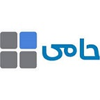

چرا منو دیجیتال QRBAMA ؟
منو جذاب با امکان دامنه اختصاصی
برند یک مجموعه غذایی به مرور ارزشی حتی بالا تر از فروش کالایی مجموعه دارد. حفظ مشتریان و داشتن دامنه خاص خود یکی از مزیت های رقابتی در فروش و برندسازی محسوب میشود.

خدمات زنجیره ای
سیستم یکپارچه منو دیجیتال امکان مدیریت شعب رستوران های زنجیره ای و فودکورت هارا نیز دارا می باشد. کدام شعبه به مشتری نزدیک تر هست ؟ فروش کدام شعبه بیشتر است ؟ تحلیل رفتار مشتریان شعبه ها را چطور می بینید؟ جواب همه این موارد با ماست.
آگاه سازی مشتری و گارسون (پیجر)
ه کمک منو دیجیتال شما قادر هستید مشتریانتان را با ارسال پیام و یا لرزش گوشی از آماده سازی سفارش مطلع سازید. همچنین قابلیت ارسال پیام و فراخوانی گارسون توسط مشتری از امکانات منو ماست .
گزارش گیری تجاری
تمامی گزارشات از جمله ورودی های منو، باشگاه مشتریان، سود و زیان صندوق و تمامی گزارشاتی که برای بیزینس خود لازم دارید. امروزه مدیریت رستوران بدون تحلیل و برسی گزارشات ، تحلیل فروش و رضایتمندی مشتریان ممکن نیست . ابزار این کار را تهیه کنید
پرداخت آنلاین
دیگر نیازی به رفتن تا پای صندوق و انتظار برای دریافت صورتحساب نیست، مشتریان می توانند از سر میز بصورت آنلاین سفارش خودشان را پرداخت نمایند و به صورت روزانه بدون اشتباه محاسباتی مبالغ را دریافت کنید .
باشگاه مشتریان
به ازای هر سفارش از منو، به مشتریانتان در باشگاه مشتریان اعتبار دهید،کمین تبلیغاتی تعریف کنید و رضایت مشتریان را بررسی کنید . این امر در فرآیند بازگشت مشتری به مجموعه شما تاثیر بسزایی دارد
قابلیت اتصال به نرم افزار حامی
منو آنلاین کیو آر باما قابلیت اتصال به نرم افزار های فروش و حسابداری و باشگاه مشتریان می باشد. این مهم در حال حاضر به صورت کامل در نرم افزار تخصصی رستورانی حامی رقم خورده است.
کیف پول و کارت اعتباری
مشتریان سازمانی و حتی حقیقی این امکان را دارند تا با تعریف کارت اعتباری و کیف پول از اعتبار خود به روش های مختلف استفاده کنند . رضایت مندی مشتریان و فروش خود را تضمین کنید
.png)